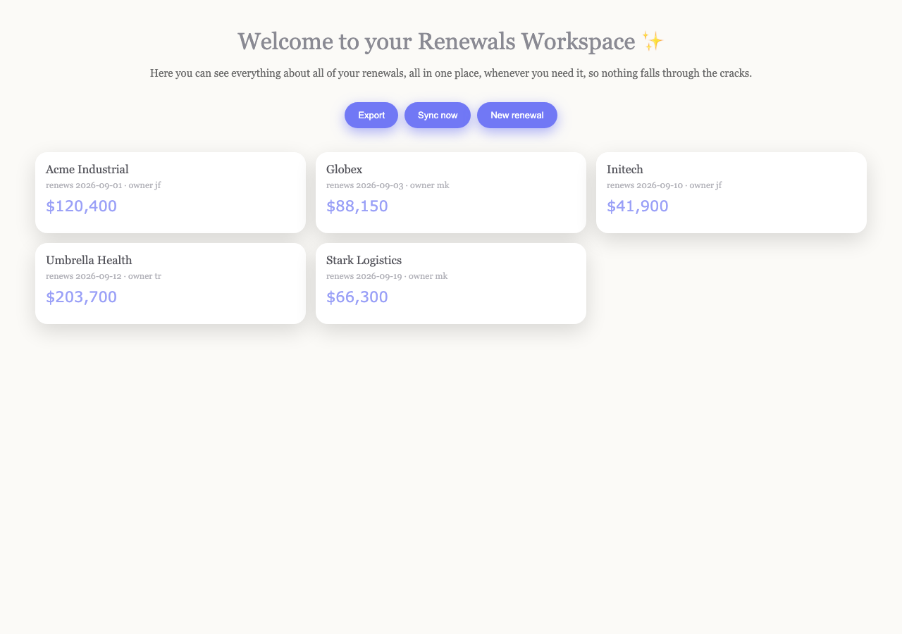
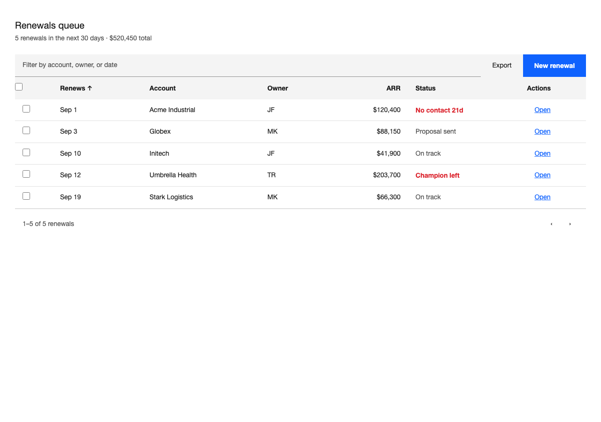
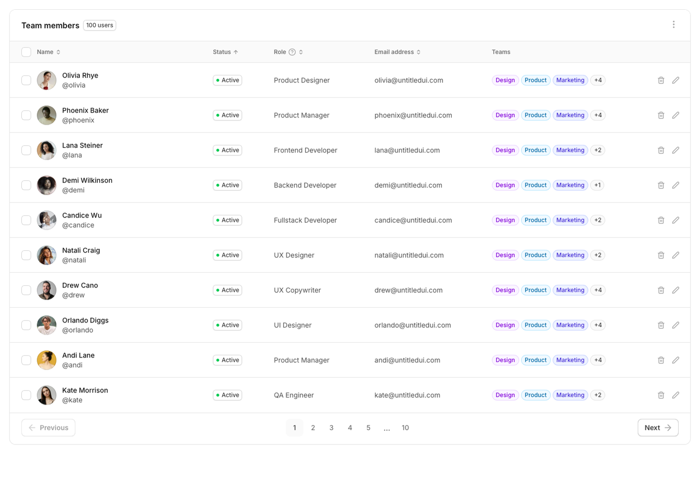
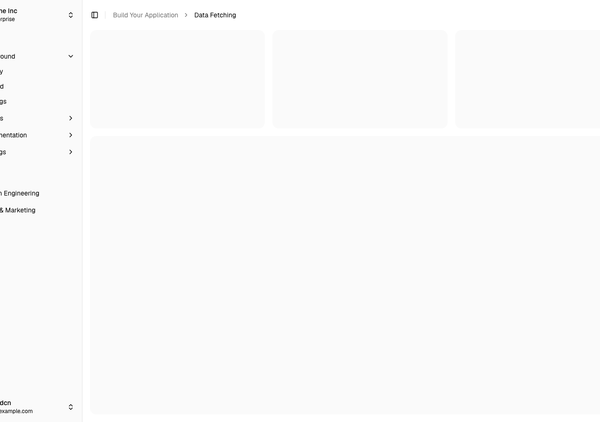
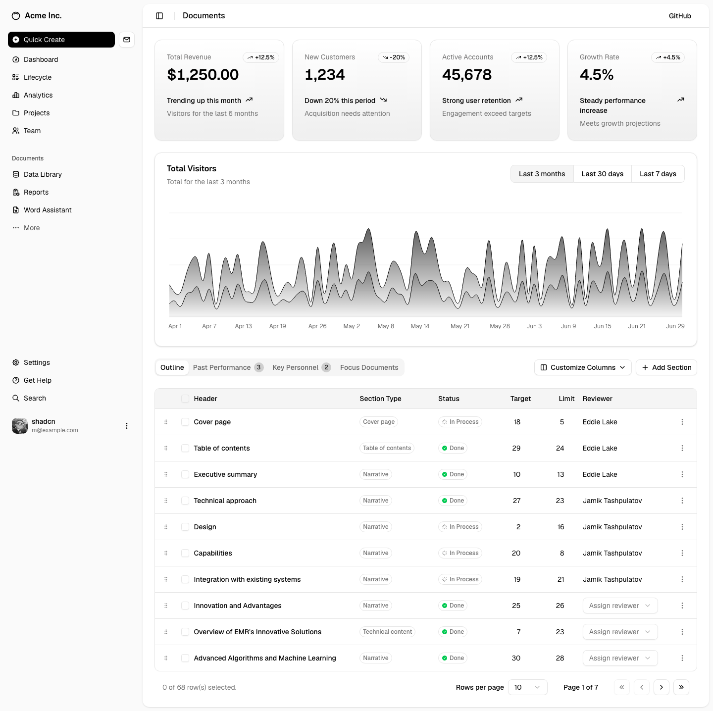

Shine · Claude Code and Cursor
Your agent copies a real designed page.
Shine is the UX skill that makes it match a template from a real kit — then prove the pixels. Look, name, match, restructure, repaint, prove.


untitled-table. One primary. The work is a table.You already know the other look. Gray canvas. Inter. A rounded card. A blue button. Ask for Linear. Ask for “expensive.” Ask for a briefing a CEO would actually open. You get the same costume with a new label. Prompting over it does nothing. The model paints with whatever the library left on the floor.
What it is
A director, not a palette. Shine is a skill for Claude Code and Cursor: a design system the agent cannot shrug off, and a director that looks at the rendered page. Harvested kit screens (shadcn, Untitled UI, Spectrum, Fluent, Magic UI) plus Lightning blueprints with vendor shots. Query-only kits stay query-only. Kits that carry their own runtime are not carried at all. Hooks that block off-token writes. None of that is interesting until the next briefing looks like a briefing.
The product is the loop. Before a pixel, the agent opens a page that already solved the job. It names what is wrong in UX terms. It matches one of those templates, clones that page’s regions, and paints with that kit’s own tokens. Then measure and compare have to agree, or the build is not done.



How it works
The loop
- LookRender the page. Read the pixels, not the source.
- NameHierarchy, flow, density — defects in UX terms, worst first.
- MatchA real template for this job. Not a vibe. Not zinc.
- RestructureClone that page’s regions. A briefing stays a briefing.
- RepaintThe kit’s tokens, declared once. Usage sites say var().
- Proveaxe, contrast 4.5:1 (3:1 at 24px), composition, and a side-by-side against the harvested shot. No likeness score.
Gates catch invented hex. They do not catch the costume. A page can hit every token and still look generated — completeness is not likeness. Prove is pixels: measure.mjs and compare.mjs against the cite, not a number the page awards itself. This page cites shadcn-blog and paints with zinc. That is the point.
One runtime, or none
On 31 August 2026 Shine deleted MUI, Ant Design Pro and IBM Carbon outright — 15 harvested packs, 4 corpus clones, 3 voice sheets, 17 catalog rows and every reference that pointed at them. Not retired, not down-ranked: gone from disk. Both consumers of this skill are shadcn/Tailwind repos, so a reference built on another kit's runtime and theming is a page nobody can build. Handing an agent a page it cannot build teaches it costume — copy the look, skip the mechanism — which is the exact failure the loop exists to stop.
The cost is stated rather than hidden. Marketing, checkout and wizard lost their only rendered pixels and are now region maps: structure without a shot, and the doctor names them as structure-only every run. What replaced the deleted rows is a blueprint per screen, written against what shadcn actually publishes.
Generalising the checks that had been written around those kits found four more defects that had nothing to do with them: Mantine, SLDS, Spectrum and Tremor were each shipping an action colour that failed AA against its own label — 3.56:1, 2.19:1, 2.19:1 and 3.68:1. The contrast law had only ever been proven on one sheet. It now runs over every sheet on disk, in every mode a sheet declares.
This afternoon
If your AI supports skills, give it the canonical SKILL.md. If it does not, paste the same text into persistent project or custom instructions. No repository knowledge is required. The full install still builds an immutable release for Codex and Cursor and proves it with node verify/doctor.mjs. The browser-free --ci gate enforces at least 113 checks; --ci --full runs 158 checks across browser interaction, component runtimes, and consumers. Tokens emit to nine targets: CSS, Tailwind, artifacts, Python, site CSS, email, Docs, Office, Salesforce.
MIT · plain Markdown · native skill or persistent instructions · advanced repository install remains available
skill/ lines
SKILL.md 71
references/
adoption.md 158
ai-surfaces.md 160
anti-patterns.md 130
audit.md 95
brand.md 84
color-type.md 217
contracts.md 376
copy.md 148
corpus.md 110
dashboards.md 220
dataviz.md 126
diagnose.md 127
direction.md 52
ecosystem.md 151
foundations.md 193
imagegen.md 60
interaction.md 43
kits.md 118
layout.md 29
motion.md 223
patterns.md 213
performance.md 121
salesforce.md 238
taste.md 224
techniques.md 90
templates.md 153
usability.md 32
verification.md 280
voice.md 119
voices.md 46
wireframe.md 200
4,607